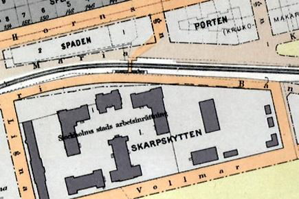
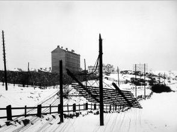
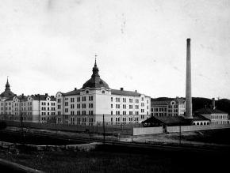
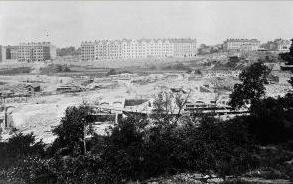
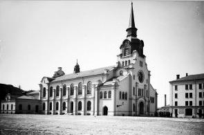
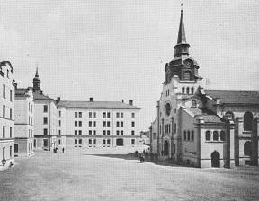
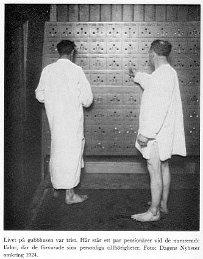

Södermalm i tid och rum. Stockholm
Vårdhemmet Högalid
Ur Västra Södermalm, Arne Munthe, 1965
|
 1922 Till skillnad från ålderdomshemmen har Vårdhemmet Högalid, som tidigare hette Stockholms stads arbetsinrättning, mycket kvar av den gamla anstaltsprägeln, men hela inrättningen är numera också utdömd på kort sikt. Den kom ursprungligen till för att ersätta Dihlströmska inrättningen vid Glasbruksgatan och ansågs vid sin tillkomst vara en mönsteranstalt, som fyllde höga standardkrav. Vid valet av plats hade man tvekat mellan stad och land, och Kungsholmen hade varit på tal, innan man stannade för det nersänkta området vid slutet av Hornsgatan. Det kasernliknande komplexet uppfördes under åren 1902-1905 och gav ursprungligen plats för 1.432 intagna. |
 Södra stambanan mot öster omkr 1905. Nedblåst telefongalge vid Arbetsinrättningen.
 Stockholms Stads Arbetsinrättning 1905 |
|
  Byggnadsarbetena med Vårdhemmet Högalid påbörjas 1903. Bilden från söder. Byggnadsarbetena med Vårdhemmet Högalid påbörjas 1903. Bilden från söder.
|
Närmast kan arbetsinrättningen betraktas som en arvtagare till de gamla försörjningshusen med
uppgift att bereda upphälle och nödhjälpsarbete för relativt arbetsföra män, som av olika
anledningar - många är alkoholskadade - icke kan ta hand om sig själva. De sysselsätts med
handräckning eller i anstaltens verkstäder och uppbär en blygsam timpenning. In- och
utskrivning är helt frivillig - rekordet för en person skall vara 56 sådana på ett år - och
medelåldern ligger mellan 50 och 60 år.
Man kan förstå, att i denna ganska trista kasernöken, där målet i många fall måste begränsas till att ge äldre män en dräglig sista resurs att leva vidare, icke skall finnas mycket resonans för andlig påverkan: redan för länge sedan förvandlades den ursprungliga kyrksalen till en kvastverkstad. |
|
Vissa förbättringar har gjorts
under årens lopp i riktning mot en mera nyanserad omvårdnad, framför allt genom en
nybyggnad 1926, då en särskild vårdhemsavdelning inrättades, skild från
försörjningsavdelningen; i det sammanhanget fick anstalten sitt nuvarande namn. Området, där Vårdhemmet Högalid nu ligge, kommer att beröras av den planerade sexfiliga Fatbursleden, och i övrigt skall marken utnyttjas för kontors- och bostadshus. Det är tänkt, att själva anstalten om några år skall ersättas av ett antal specialhem, förlagda till Skarpnäck och väster om Beckomberga. Därmed blir det möjligt att differentiera klientelet efter vårdbehovet, så att målet verkligen kan inriktas på aktiv rehabilitering och social återanspassning enligt principerna för modern socialvård. |
 |
|
 
|
Ett stort komplex försvann 1971 från dalen, Högalids vårdhem. Liksom Långholmen har också Högalid varit utsatt för bister kritik. Så sent som 1964 tog en medarbetare i Stockholms-Tidningen sig in i anstalten för att se om de rykten var sanna som talade om misshandel av de så kallade Högalidsgubbarna. Vid det laget var hela inrättningen svårt nedsliten trots att den vid starten 1905 ansågs som en av Europas modernaste. Det stora felet var att folk av så olika slag fösts in under samma tak. Alkoholister, kroppsligt sjuka och mentalsjuka behandlades på samma sätt. Reglerna var onödigt hårda. Om en pensionär fått permission en dag blev han inte insläppt förrän klockan 16, även om ärendet var uträttat och han ingenstans hade att ta vägen. Kanske hade han inte heller några pengar att äta för. Så hade det varit i sextio år och så ansåg ledningen att det borde vara i fortsättningen. |
|
Undersökningar visade att talet om misshandel inte var helt obefogat, en intern hade släpats iväg av
vakterna och då han gjorde motstånd dunkades hans huvud i en stenvägg.
Reportern ger följande beskrivning: När jag avlusats, fått mej tilldelad en sängplats i ett rum, där det förut ligger elva man, och fått besked om att börja arbeta i köket på måndag - med en timpenning av 35 öre - kommer jag snart i förtroligt samtal med flera av hemmets c:a 750 gäster. - Det är anstaltsledningen som kallar oss "gäster", förklarar "högalidarna" ironiskt. Själva tycker vi nog att interner är ett mera adekvat uttryck. Av de 750 är c:a 450 placerade på försörjningsavdelningen, dvs. att de mot låg timpenning får jobba i tvätten, på någon av verkstäderna eller i köket. En del får tillverka kvastar, som går till den kommunala gatsopningen. "Högalidarna" själva ville inte påstå att arbetstakten var särskilt uppskruvad, men etthundratrettio kvastar tillverkades i alla fall dagligen. Trehundra intagna fanns på den så kallade vårdavdelningen. |
 |